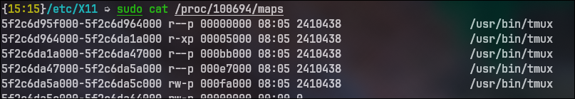

On UNIX filesystem , everything is a file;
If something is not a file, it is a process
| Symbol | Meaning |
|---|---|
| - | Regular file |
| d | Directory |
| l | Link |
| c | Special file |
| s | Socket |
| p | Named pipe |
| b | Block device |
srwxr-xr-x 1 root root 0 Apr 20 10:00 /run/systemd/journal/socket
mkfifo mypipe
socket semantics Data - the system data, along with the root parition /boot - the image of the kernel vmlinuz / bzimage , Initramfs , Bootloader , EFI files
Swap - expansion of computer's physical memory, in order to swap pages with the cache - typically
slowed than RAM /usr: a directory for user's programs /home:a directory for user's personal data/var:a directory for temporary data /opt:a directory for third party - extra softwareTable 3-2. Subdirectories of the root directory
| Directory | Content |
|---|---|
| /bin | Common programs, shared by the system, the system administrator and the users. |
| /boot | The startup files and the kernel, vmlinuz. In some recent distributions also grub data. Grub is the GRand Unified Boot loader and is an attempt to get rid of the many different boot-loaders we know today. |
| /dev | Contains references to all the CPU peripheral hardware, which are represented as files with special properties. |
| /etc | Most important system configuration files are in /etc, this directory contains data similar to those in the Control Panel in
Windows: locale.gen, hostnames, fstab, cron config, defaults, powersystem, firewall, profiles,
bluetooth protocols configm Display compositor session management config |
| /home | Home directories of the common users. |
| /initrd | (on some distributions) Information for booting. Do not remove! |
| /lib | Library files, includes files for all kinds of programs needed by the system and the users. |
| /lost+found | Every partition has a lost+found in its upper directory. Files that were saved during failures are here. |
| /misc | For miscellaneous purposes. |
| /mnt | Standard mount point for external file systems, e.g. a CD-ROM or a digital camera. |
| /net | Standard mount point for entire remote file systems |
| /opt | Typically contains extra and third party software. |
| /proc | A virtual file system containing information about system resources. More
information about the meaning of the files in proc is obtained by entering the
command man proc in a terminal window. The file
proc.txt discusses the virtual file system in detail./proc/$pid/maps format Actual process in practise  |
| /root | The administrative user's home directory. Mind the difference between /, the root directory and /root, the home directory of the root user. |
| /sbin | Programs for use by the system and the system administrator. |
| /tmp | Temporary space for use by the system, cleaned upon reboot, so don't use this for saving any work! |
| /usr | Programs, libraries, documentation etc. for all user-related programs. |
| /var | Storage for all variable files and temporary files created by users, such as log files, the mail queue, the print spooler area, space for temporary storage of files downloaded from the Internet, or to keep an image of a CD before burning it. |
- / d / c / l / s / p / b this information has been edited in the inode entry filename and dirents
are used to make up the tree-like structure that the user understands